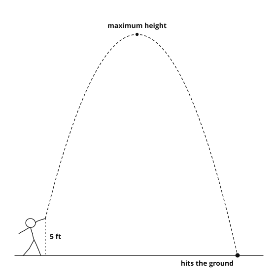

1. Why would we use a quadratic to model a ball thrown in the air?
Gravity makes the height rise and then fall. That path is a parabola.
2. If a quadratic has two solutions, what might they represent in a real situation?
Two moments when the quantity hits that value, for example on the way up and on the way down, or two break-even points.
3. When would only one of the two solutions make sense?
When the other is negative (time, length or a count cannot be negative) or otherwise impossible in context.
| Feature | What it tells us | Example |
|---|---|---|
| Vertex | The highest or lowest value of the situation | Maximum height of a ball, highest profit, minimum cost |
| y-intercept | The starting value when x = 0 | Starting height, initial amount of money, starting population |
| x-intercepts | When the quantity becomes zero | When an object hits the ground, when profit is zero, break-even points |
| Axis of symmetry | The input where the situation switches direction | When something stops increasing and starts decreasing |
| Opening direction | Whether the situation has a maximum or minimum | Downward opening for max height, upward opening for min cost |
a. A ball is thrown from a cliff. How tall is the cliff? the y-intercept
b. A skateboarder rides a ramp. How long to reach the bottom? the x-coordinate of the vertex
c. A business sells shirts. How many to break even? the x-intercepts
d. A rocket is fired up. How high does it go? the y-coordinate of the vertex

Part 1: When does it hit the ground? Set h(t) = 0, because the ball hits the ground when its height is zero.
Solve with the quadratic formula:
t = −40 ± √1920−32, and √1920 = 8√30 ≈ 43.82
Two answers: t ≈ 2.62 and t ≈ −0.12. We reject the negative one because time cannot be negative.
The ball lands after about 2.62 seconds.
The maximum happens at the vertex, so t = −b2a = −40−32 = 1.25
Maximum height = h(1.25) = 30 feet
0 = −16t2 + 24t + 6; disc = 576 + 384 = 960
t = −24 ± √960−32; the positive root is t ≈ 1.72 seconds.
Let x = the width in feet, so the length is x + 4.
Equation: x(x + 4) = 96 → standard form: x2 + 4x − 96 = 0
Solutions: (x + 12)(x − 8) = 0, so x = 8 or −12 We reject −12 because a width cannot be negative.
Width 8 ft, length 12 ft
Let w = pool width, so pool length = w + 4.
The walkway adds 4 feet to each dimension, so the outside is w + 4 by w + 8.
Equation: (w + 4)(w + 8) = 192 → w2 + 12w − 160 = 0
Pool: 8 ft by 12 ft
Let x be the number of $1 increases.
Price: 10 + x Tickets sold: 80 − 5x
Revenue: R(x) = (10 + x)(80 − 5x) = −5x2 + 30x + 800
Vertex at x = 3, so the price is $13, tickets sold 65, and maximum revenue $845.
Let x be the number of $1 price increases.
Careful: the vertex is not a whole dollar. What do you do then? check the whole-dollar prices on either side, x = 3 and x = 4
R(x) = (8 + x)(60 − 4x) = −4x2 + 28x + 480
Vertex x = 3.5. x counts $1 increases, so check x = 3 and x = 4: both give $528.
Best price: $11 or $12.
1. Which part of a quadratic gives the maximum or minimum value? the vertex
2. What does a solution of h(t) = 0 usually represent in a height problem? the moment the object reaches the ground (height 0)
3. Why do some quadratic solutions get rejected in real problems? negative times, lengths or counts do not make sense in context
Answer: t = 2 seconds
−16t(t − 2) = 0 → t = 0 or 2
Answer: 5 ft by 8 ft
x(x+3) = 40 → (x+8)(x−5) = 0
Answer: 46 feet, at t = 1.5 s
Answer: 10 items
−16t2 + 16t + 40 = 0; divide by −8: 2t2 − 2t − 5 = 0
t = 1 ± √112; the positive root is ≈ 2.16 seconds.
2x + 2L = 40, so L = 20 − x.
A = x(20 − x) = −x2 + 20x, with vertex at x = 10.
A 10 × 10 square, area 100. This is the largest possible area.
The two times the quantity is zero, for example an object leaving the ground at t = 1 and landing at t = 5.
Answers vary. For example: profit in hundreds of dollars from selling x hundred items.
The vertex is (3, 13), so selling 300 items gives the maximum profit, $1300.
Vertex (2, 64), so h(t) = a(t − 2)2 + 64.
At t = 5: 9a + 64 = 0 → a = −649
h(t) = −649(t − 2)2 + 64